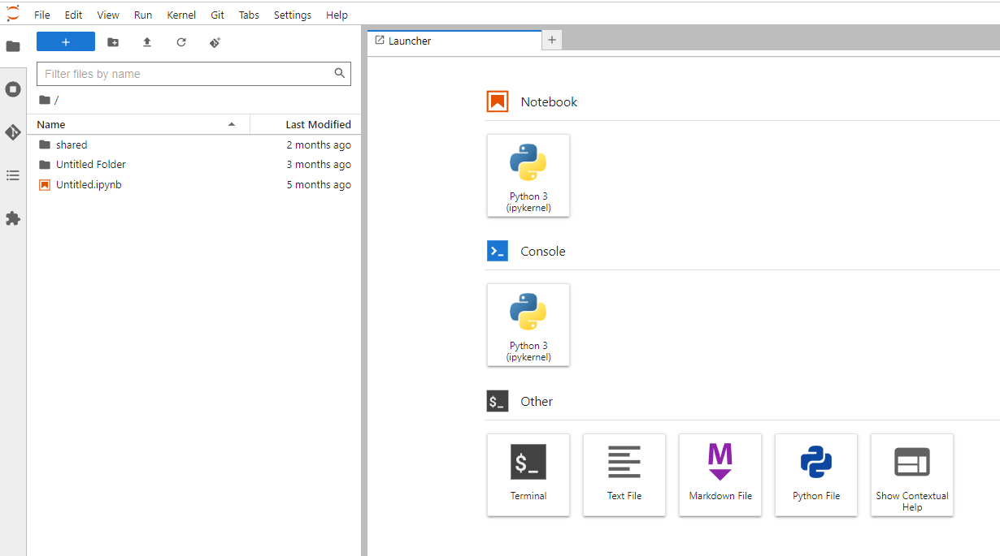

Configuración Inicial#
1-¿Cómo utilizar el hub de 2i2c?#
Para acceder al 2i2c Hub seguí estos sencillos pasos:
Accede al Hub de 2i2c

Introducí tus credenciales: Ingresa tu nombre de usuario y contraseña (Nota: Para esto deberías haber enviado tu correo asociado a tu cuenta de Github para que se te habilite el acceso con dicha cuenta).
Si el acceso es correcto, verás la pantalla que se muestra a continuación. Por último elegí la opción Start para ingresar al ambiente de Jupyter lab en la nube.

Listo, ya estás listo para empezar a trabajar.

2- ¿Cómo utilizar el Earthdata de la NASA?#
Breve introducción#
El programa Earth Science Data Systems (ESDS), Programa de Sistemas de Datos de Ciencias de la Tierra de la NASA, supervisa el ciclo de vida de los datos científicos de la Tierra de todas sus misiones de observación de la Tierra, desde su adquisición hasta su procesamiento y distribución.
A los efectos de esta guía, el sitio web Earthdata de la NASA es el punto de entrada que permite acceder de manera completa, gratuita y abierta a las colecciones de datos de ciencias de la Tierra de la NASA, con el fin de acelerar el avance científico en beneficio de la sociedad. Para acceder a los datos a través de este portal, los usuarios deben definir primero sus credenciales de acceso.
Para crear una cuenta en EarthData, seguí los pasos que se indica:
Ingresa al sitio de Earth Nasa: https://www.earthdata.nasa.gov/. Luego selecciona la opción “Use Data” y a continuación “Register”. Por último, ingresa a https://urs.earthdata.nasa.gov/.

Selecciona la opción “Register for a profile”, allí elige un nombre de usuario y contraseña. Como sugerencia, elige aquellos que recuerdes bien, ya que los necesitarás más adelante. También deberás cargar tu perfil para compeltar el registro, en el mismo se te pedirán datos como correo, país, afiliación, entre otros. Al final, elige “Register for Earthdata Login”.

3- Configuración de datos para acceder desde Jupyter notebooks#
Ahora viene la parte técnica: para acceder a los datos desde programas de Python y Jupyter notebooks, es necesario guardar las credenciales (de EarthData) en un archivo especial. En este repositorio encontrarás un archivo llamado .netrc con un ejemplo (puedes pensar en él como una plantilla). Abre ese archivo y edita la siguiente línea:
machine urs.earthdata.nasa.gov login {tu_nombre_de_usuario} password {tu_contraseña}
Luego, reemplaza {tu_nombre_de_usuario} y {tu_contraseña} con los datos de tu cuenta. Guarda el archivo y ¡listo! Ya tienes todo lo necesario para acceder a los datos de observación de la Tierra a través del portal de EarthData. ️
Para asegurarte de que todo funciona correctamente, abre la notebook titulada 1_primeros_pasos.ipynb y sigue las indicaciones. ¡Con esto ya podrás explorar el mundo de los datos de la NASA!